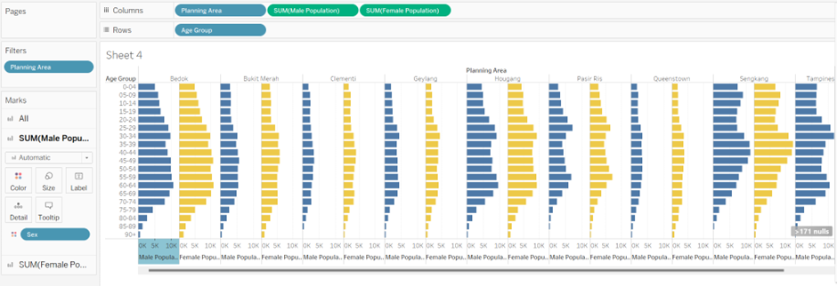

Take-home Exercise 1
1. Introduction
Between January 2020 to June 2022, there were 73,247 real estate transactions in Singapore across all property types. It would be interesting to explore population demographics of the top 9 planning areas by volume of real estate transactions.
The population demographic data used is “Singapore Residents by Planning Area / Subzone, Age Group, Sex and Type of Dwelling, June 2022” from the Department of Statistics, Singapore.
The age-sex pyramid in a trellis display is used to show the demographic structure by gender and age group for each of these top 9 planning areas.
Source: REALIS, URA Singapore
2. Age-Sex Pyramid Visualization
The proposed age-sex pyramid in a trellis display visualization for the 9 planning areas by gender and age group is available for viewing on Tableau Public.
2.1 Negative Population Growth Rate
The age-sex pyramid of all 9 planning areas point towards a negative population growth rate where the large age groups the middle outstrip the younger ones. The adults in these middle age groups will soon become seniors with higher dependency on younger family members for living cost burdens even as general living costs are on the rise. This is consistent with the general discourse on Singapore’s aging population problem where the state is also concerned that the burden extends to state funding as well. More resources and facilities in areas such as health care will need to be provided by the government to support the rising number of seniors.
This negative growth rate is to a certain extent less prevalent in planning areas such as Bukit Timah, Clementi, and Queenstown where housing prices tend to be higher than the others. This is quite surprising as these are some of the most mature estates in Singapore and would have expected to see a more distinct inverted triangle shape. One possible explanation is that since these areas are home to more affluent families, especially in Bukit Timah, they have the financial muscle to have more children with less concerns about the cost of doing so.
2.2 Other Interesting Stray Observations
A hypothesis can be made that females live longer than males as there seems to be more females in the higher age groups in every planning area. This trend starts around the 80-84 age group and becomes most distinct in the 90+ group.
Below the 80-84 age group, the ratio of males to females appear to be quite equally split. Furthermore, the largest age groups also appear to be fairly consistent between the number of males and females
Bukit Timah has the smallest total population size but interestingly topped the list at 5,390 transactions between January 2021 and June 2022.
Pasir Ris land area is comparable to Sengkang and Hougang but much less densely populated.
3. Step-by-Step Guide
3.1 Data Cleaning with Tableau Prep Builder
| 3.1.1 | Load the csv file | |
| 3.1.2 | Rename column headers into more recognizable names | |
| 3.1.3 | Modify “Age Group” so that it can be sorted in descending order | |
| 3.1.4 | Output clean data as .hyper data extract for use in Tableau Desktop |
3.2 Data Visualization with Tableau Desktop
| 3.2.1 | Create calculated field for male and female population | |
| 3.2.2 | Add “Planning Area”, “Male Population”, “Female Population” to columns Add “Age Group” to rows Add “Sex” to Colour and select desired colour |
 |
| 3.2.3 | Filter the 9 selected planning areas | |
| 3.2.4 | Reverse y-axis to get descending order for age group, reverse x-axis for male population to get the pyramid shape and standardize the range to ensure bar lengths are comparable | |
| 3.2.5 | Make cosmetic changes to headers, axis, text, legend, etc. for cleaner and better look. Prepare dashboard for publishing to Tableau Public. |